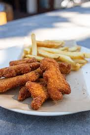

Dinonuggets and French Fries

Dinonuggets and French Fries Secret Recipe
This recipe is near and dear to my three old son.
Anytime I ask him what he wants for dinner, this is what
he says. Sometimes even for breakfast this is what he
wants. Simple and delicious.
Ingredients
- Frozen dinonuggets from the supermarket
- Frozen fries, crinkle cut or curly is prefered
- Ketchup
- spray cooking oil, for ease and convience
Instructions
- Go to the grocery store.
- Go STRAIGHT to the frozen food aisle that is clearly labeled, meals and main dishes.
- Get the Frozen Dinonuggets
- Go to the frozen aisle that is clearly labeled for potatoes.
- Grab a bag of crinkle cut fries, the cheapest and biggest bag will do.
- Head over to your condiment aisle and grab the ketchup
- Check out, pay, drive home
- Follow the instructions the bags and DO NOT throw the bags away until the dishes are fully cooked and out of the oven.
- Serve the dinonuggets luke warm to avoid tantrums.
This meal is toddler approved, proceed with caution.